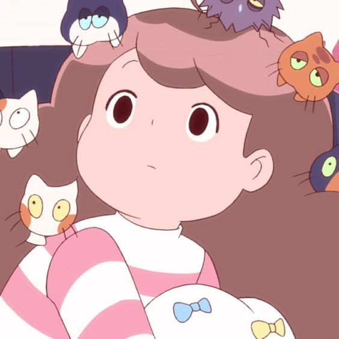
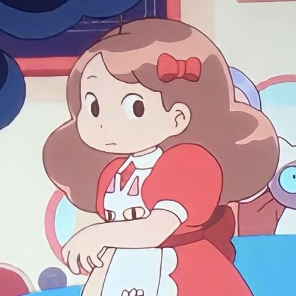
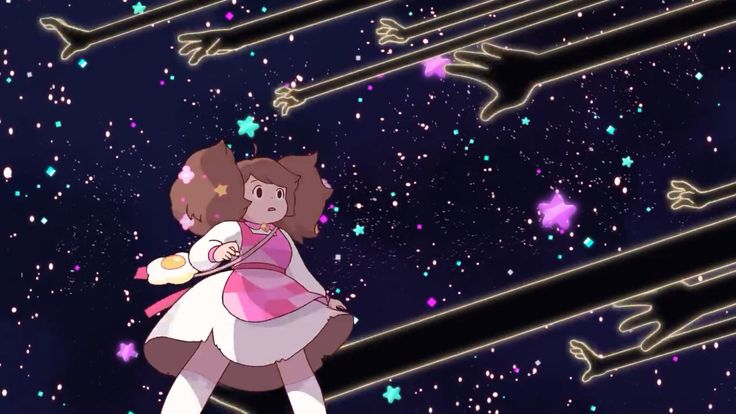
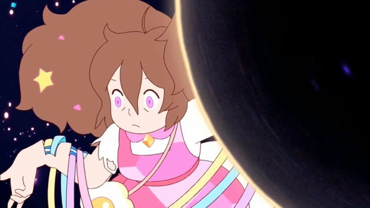

Bee
Bee est une jeune fille d'une vingtaine d'année qui vivait seule jusqu'à ce qu'elle rencontre PuppyCat et qu'il deviennent colocataires. Elle est bienveillante mais également impulsive et agit souvent sans réfléchir, ce qui la met parfois dans des situations difficiles. Elle est quelque peu naïve, optimiste et fait confiance aux gens très rapidement.
Ne réussissant pas à garder de travail très longtemps, PuppyCat lui permet grâce à Interim Bot de se faire un peu d'argent en travaillant dans l'espace comme on voit sur l'image ci-dessous. Sur l'image au dessus on la voit lorsqu'elle travaillait au Cat Cafe près de chez elle où elle a été virée pour son manque de sérieux au travail (elle faisait souvent la sieste avec les chats dans une armoire).
Une jeune fille Cyborg
En effet, comme on peut le voir sur l'image ci-dessus, Bee n'est pas une jeune fille ordinaire! Certains passages nous laissent le supposer mais sans nous réveler sa vraie nature. Celle-ci avait apparemment une force sur-humaine, une peur de l'eau bien notable en plus d'un corps qui ne vieillit pas... On apprend plus tard dans la série que Bee n'est pas humaine ou *plus* humaine mais une cyborg. Il existe de nombreuses théories comme quoi elle serait morte et que son père lui aurait fait revenir à la vie en lui créant un corps robotique ou encore que Bee a tout simplement été crée artificiellement toujours par son père. Le père de Bee est un homme dénommé Bird qui faisait partie de l'équipage de PuppyCat, cependant celui-ci a disparu de façon mystérieuse il y a de nombreuses années. La mère de Bee quant-à elle n'est jamais mentionnée dans la série.